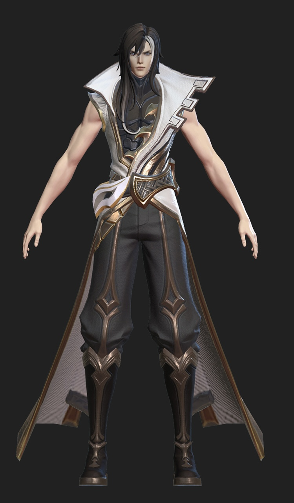
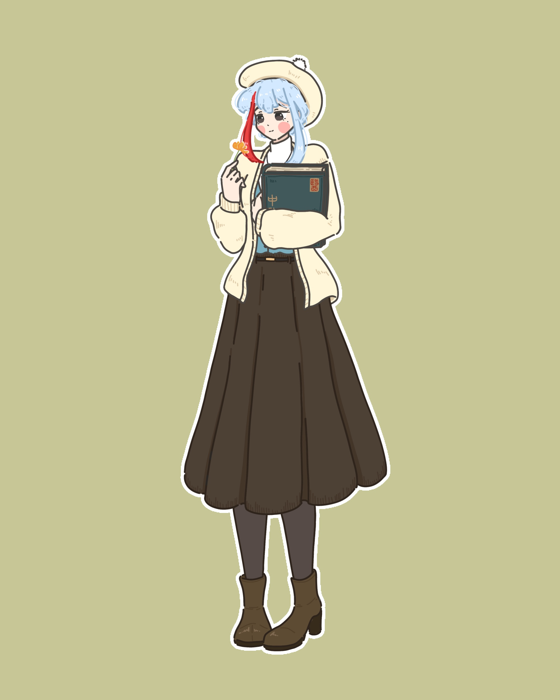

主線故事
第一章
初遇
第二章
內容
第三章
內容
第四章
內容
第五章
內容
內容
服設
內容
內容
服設

秋日服設
內容
繪：米畫師
繪：麵包包
繪：陌霖
繪：佛系植物
繪：佛系植物

繪：戀夢繪
初遇
內容
內容
內容
內容
初遇
內容
內容
內容
內容
內容
內容
內容
內容
內容
內容
內容
內容
內容
內容
內容
內容
「司馬懿，這普生我快讀不下去了⋯⋯」
「這種東西也唸不下去？一天天的妳腦子到底裝了什麼？」
返回
𝟻𝟸𝟶 𖡼ॱ*｡ﾟ✿✧
一個高溫的下午，就是吃布丁消暑的最好時機。
林楰召在耗費一整個下午整理完那雜亂的藥箱後，踏著愉快的步伐向冰庫前進，思索著等等要藉由剩下那一份點心脫離暑氣的纏繞以及雜亂的思緒。
冰涼的布丁自冰庫中取出後，在陽光照耀下閃爍著金黃色的光芒，上層的黑糖慢慢地流動，不停向她招手，像是在跟她說：「快來吃掉我！」
卻沒有想到，腳下出現熟悉的印記，而布丁也伴隨著一聲「死神降臨！」落入司馬懿手心⋯⋯
ॱ*｡ﾟ✧ 𝟖/𝟐𝟑—
在八月二十三這日，林楰召終於停下旅行的腳步，返回魏都為那位日理萬機的軍師慶生。
煙霏霧集，少女的身影悄悄的出現在青石小道上，她迅速的打開了司馬府側門，躡手躡腳的溜了進去，卻沒想到都走不到兩步，便被人從身後制住。
冰冷的指尖扣上她的頸脖，「原來妳還記得回來？」林楰召愣了一下，出於習慣，她很快的揚起笑容，那抹笑意溫順卻熟練，「怎麼會忘記呢？今天可是某位大忙人的生日。」司馬懿緩緩鬆開手，「有沒有人跟妳說過妳笑起來很難看，把這種諂媚的笑容收起來。」
她立刻放下嘴角「你以為我想⋯⋯算了，不跟你計較，我要去準備你的生日禮物。」在司馬懿解開桎梏的那一剎那，少女奔向了廚房。
林楰召將長壽麵端到餐桌上後，便坐到司馬懿從別的房間拖來的椅子上，「快吃吧！這可是我在旅途中新學到的做法，你是第一個品嚐的。」「⋯⋯第一個？妳想毒死我嗎？」司馬懿雖這麼說著，手卻很自然的拿起筷子。
「對了，你可不能咬斷喔⋯⋯」林楰召趴在桌角，抬頭看向司馬懿，窗外微弱的陽光照在她勾起嘴角的面容上，「妳什麼時候開始相信這種無稽之談了？」在他吐槽完，便見他吸著麵條，直到盡頭，它都從未斷開。
「司馬懿，你要活得好好的，祝你⋯⋯祝我每次旅行回來，都可以有人在這方庭院等待我。」在司馬懿喝下溫度恰好的湯時，聽到了她輕聲的話語，不知是湯還是祝福亦或是破曉的陽光，讓他久違的感受到一絲暖意。
「仲達，生辰快樂！」
「那我現在有笑得比較好看了嗎？」
「嗯。」
不知道是為了什麼，林楰召這次竟然打算在魏都停留半個月，在此期間，她四處採購奇奇怪怪的東西，甚至不知道用了什麼方法讓那位宵衣旰食的軍師向主公告了假，陪同她準備下一場旅行。
「驚！連休沐日都在工作的司馬軍師竟然在十二月初向主公告假！！！到底是真的需要休假呢？還是被身邊的美人誘惑了呢？請持續關注⋯⋯」
唰的一聲，黑影瞬間將林楰召手中的報紙撕碎。
「別看這些無用的東西，難怪你判斷能力那麼薄弱。」
司馬懿拍了拍手，似乎很嫌棄這份報導。
林楰召上前抓住他的手臂。
「但這張寫的都是事實，有什麼好不承認的？」
司馬懿不動聲色的將手臂靠往少女的方向，語氣毫無波瀾的說：「妳還要買什麼？快買一買，不要覺得我答應陪妳出來就是沒有工作要做。」
「嗯，我知道昨晚書房會亮著一定是因為你太有錢了，想多燒點。」
「是，所以昨天燒完，今天沒有錢讓妳揮霍了。」
「⋯⋯司馬仲達！」